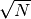
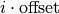
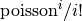
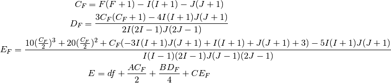

spectrum – Analysis of hyperfine structures¶
The spectrum module facilitates the creation of hyperfine structure profiles (usually through the class SingleSpectrum), and the fitting of these profiles to data. Currently, it takes into account the contributions of dipole, quadrupole and octupole moments, and the formula used for the lineshapes can be selected from the module profiles. The hyperfine parameters, as well as the requested frequency, have to be supplied in units of MHz.
- Also included are routines for fitting the data in two different ways:
- Using a least-squares approach (assuming Gaussian errors)
- Using a maximum likelihood approach (assuming Poisson errors)
Both of these methods are based on the fact that, for spectroscopic data, the error on the number of counts is Poisson-distributed, which can be approximated for large values by . A convenience routine is included to introduce the square root as the error, taking care with zero counts.
Furthermore, simultaneous fitting is also possible, through the use of the class CombinedSpectrum, as is the presence of an isomer through the class IsomerSpectrum. The usage examples go through a few of the basic commands for each of these cases.
Warning
The fitroutines are quite robust, but are not always convergent. Care has to be taken when using these routines, that the result still makes sense. Starting from a different set of parameters is highly recommended if the fit does not behave. If a maximum likelihood fit is having some issues, consider first doing a least-squares fit, which is a bit quicker and more robust, to estimate the starting parameters. Another issue is using large numbers for the frequency: best results are obtained of a deviation from a central frequency is used, so the frequency is kept in the few thousand MHz range.
Usage examples¶
Spectrum creation¶
Creating a simple hyperfinestructure uses the class SingleSpectrum from the spectrum module. Fitting to a single dataset is also demonstrated.
import satlas.spectrum as hs
import matplotlib.pyplot as plt
import numpy as np
import seaborn
seaborn.set_style('ticks')
seaborn.set_palette('colorblind')
# Gather all information
I = 0.5
J = [0.5, 0.5]
ABC = [500, 200, 0, 0, 0, 0]
df = 5000
# Create the spectrum
hfs = hs.SingleSpectrum(I, J, ABC, df, scale=3000)
hfs.background = 200
# Say which frequencies are scanned
x = np.linspace(4000, 6000, 100)
# Generate the data, add some noise
y = hfs(x)
y += 3 * np.random.randn(x.shape[0]) * np.sqrt(y)
# Fit to the generated data
hfs.FitToSpectroscopicData(x, y)
# Print the fit report
hfs.DisplayFit()
e = hfs.seperateResponse(x)
# Plot the result
fig = plt.figure()
ax = fig.add_subplot(1, 1, 1)
ax.plot(x, y, 'o')
ax.plot(x, hfs(x), lw=2.0, label=r'$\chi^2$')
ax.set_xlabel('Frequency (MHz)', fontsize=16)
ax.set_ylabel('Counts', fontsize=16)
seaborn.despine(offset=10, trim=True)
# Example of Maximum Likelihood Estimation (MLE) fitting,
# along with error calculation using Monte Carlo walking.
hfs.showAll = True # Show all triangle plots
hfs.LikelihoodSpectroscopicFit(x, y,
walking=True, # Perform the walk
walkers=100, # Number of walkers,
# see the emcee documentation for
# more on this
nsteps=2000, # Number of steps for each walker
burnin=10.0, # Defines the percentage of burnin
showTriangle=True # Show an awesome result plot
)
ax.plot(x, hfs(x), lw=2.0, label='MLE')
ax.legend(loc=0)
plt.show()

{kind=link}
{kind=link}
{kind=link}
{kind=link}
{kind=link}
{kind=link}
Multiple spectrum fitting¶
Combination of single spectra¶
The creation of a CombinedSpectrum from SingleSpectra is demonstrated. Fitting to two datasets is also demonstrated.
import satlas.spectrum as hs
import matplotlib.pyplot as plt
import numpy as np
import seaborn
seaborn.set_style('ticks')
seaborn.set_palette('colorblind')
I = 1.0
J = [5.0 / 2, 3.0 / 2]
ABC = [-129.109, -1723.61, 0, 0, 0, 0]
df = 2285.804947
fwhm = [150, 150]
varyDict = {'Bl': False, 'Bu': False, 'Cl': False, 'Cu': False}
spec1 = hs.SingleSpectrum(I, J, ABC, df, shape='voigt', fwhm=fwhm,
scale=4000.0, rAmp=True)
spec1.background = 300
spec1.setVary(varyDict)
xdata = np.linspace(min(spec1.mu) - 1000, max(spec1.mu) + 1000, 1000)
ydata = spec1(xdata)
ydata += 3 * np.sqrt(ydata) * np.random.randn(ydata.shape[0])
fwhm = [100, 100]
df = 4100.0
spec2 = hs.SingleSpectrum(I, J, ABC, df, shape='voigt', fwhm=fwhm,
scale=3000, rAmp=True)
spec2.background = 400
xdata2 = np.linspace(min(spec2.mu) - 1000, max(spec2.mu) + 1000, 1000)
ydata2 = spec2(xdata2)
ydata2 += 3 * np.sqrt(ydata2) * np.random.randn(ydata2.shape[0])
spec2.df = 4000
spec1comb = hs.CombinedSpectrum([spec1, spec2])
spec1comb.FitToSpectroscopicData([xdata, xdata2], [ydata, ydata2])
spec1comb.DisplayFit(show_correl=False)
eval1, eval2 = spec1comb.seperateResponse([xdata, xdata2])
xdata3 = np.linspace(-5000, -4500, 20)
xdata3 = [xdata3, xdata3]
y2 = spec1comb(xdata3)
x, y2, _ = spec1comb.sanitizeFitInput(xdata3, y2, np.sqrt(y2))
fig, ax = plt.subplots(2, 1, sharex=True)
ax[0].plot(xdata, ydata, 'o')
ax[0].plot(xdata, eval1, lw=2.0)
ax[1].plot(xdata2, ydata2, 'o')
ax[1].plot(xdata2, eval2, lw=2.0)
ax[1].set_xlabel('Frequency (MHz)', fontsize=16)
ax[0].set_ylabel('Counts', fontsize=16)
seaborn.despine(ax=ax[1], offset=10, trim=True)
seaborn.despine(ax=ax[0], offset=10, trim=True, bottom=True)
plt.tight_layout()
plt.show()
(Source code, png, hires.png, pdf)
{kind=link}
{kind=link}
Combination of spectra with isomeric presence¶
Adding in isomeric peaks complicates the spectrum
import satlas.spectrum as hs
import matplotlib.pyplot as plt
import numpy as np
import seaborn
seaborn.set_style('ticks')
seaborn.set_palette('colorblind')
varyDict = {'Bl': False, 'Bu': False, 'Cl': False, 'Cu': False}
# Gather all information
I = 1.0
J = [5.0 / 2, 3.0 / 2]
ABC = [-129.109, -1723.61, 0, 0, 0, 0]
df = 2285.804947
fwhm = [150, 150]
# Create the spectrum
spec1 = hs.SingleSpectrum(I, J, ABC, df, shape='voigt', fwhm=fwhm,
scale=4000.0, rAmp=True)
# Set a few parameters
spec1.background = 300
# Fix the B and C parameters for spec1
spec1.setVary(varyDict)
# Isomer adding
I = 4
ABC = [-45.3133, -591.94, 0, 0, 0, 0]
df = 2266.436463
spec4 = hs.SingleSpectrum(I, J, ABC, df, shape='voigt', fwhm=fwhm,
scale=4000, rAmp=True)
spec4.setVary(varyDict)
first = spec1 + spec4
# Set the parameters to be shared between the spectra.
first.shared = ['FWHM', 'FWHML', 'FWHMG']
# Generate the data, add some white noise
xdata = np.linspace(-2000, 8000, 1000)
ydata = first(xdata)
ydata += 3 * np.sqrt(ydata) * np.random.randn(ydata.shape[0])
first.FitToSpectroscopicData(xdata, ydata)
first.DisplayFit(show_correl=False)
iso1, iso2 = first.seperateResponse(xdata)
# Plot the results
fig, ax = plt.subplots(1, 1)
ax.plot(xdata, ydata, 'o', markersize=5)
ax.plot(xdata, first(xdata), lw=2.0)
ax.plot(xdata, iso1, lw=2.0)
ax.plot(xdata, iso2, lw=2.0)
ax.set_xlabel('Frequency (MHz)', fontsize=16)
ax.set_ylabel('Counts', fontsize=16)
seaborn.despine(offset=10, trim=True)
plt.tight_layout()
plt.show()
(Source code, png, hires.png, pdf)
{kind=link}
{kind=link}

Code documentation¶
Module author: Wouter Gins <wouter.gins@fys.kuleuven.be>
Module author: Ruben de Groote <ruben.degroote@fys.kuleuven.be>
- class satlas.spectrum.CombinedSpectrum(spectra)[source]¶
Bases: satlas.spectrum.Spectrum
A class for combining different spectra (CombinedSpectrum) or combining isomers/isotopes (IsomerSpectrum, child class).
Parameters: spectra (list of IsomerSpectrum or SingleSpectrum objects) – A list defining the different spectra. - lnprior(params)[source]¶
Defines the (uninformative) prior for all parameters.
Parameters: params (Parameters) – Instance of Parameters with values to be used in the fit/walk Returns: If any of the parameters are out of bounds, returns -np.inf , otherwise 1.0 is returned Return type: float
- paramsFromVar()[source]¶
Combine the parameters from the subspectra into one Parameters instance.
Returns: params Return type: Parameters instance describing the spectrum. Warning
Black magic going on in here, especially in the block of code describing the shared parameters.
- sanitizeFitInput(x, y, yerr=None)[source]¶
Take the x, y, and yerr inputs, and sanitize them for the fit, meaning it should convert y/yerr to the output format of the class, and x to the input format of the class.
- splitParams(params)[source]¶
Helper function to split the parameters of the IsomerSpectrum instance into a list of parameters suitable for each subspectrum.
Parameters: params (Parameters) – Parameters of the IsomerSpectrum instance. Returns: p – A list of Parameters instances, each entry corresponding to the same entry in the attribute spectra. Return type: list of Parameters
- class satlas.spectrum.IsomerSpectrum(spectra)[source]¶
Bases: satlas.spectrum.CombinedSpectrum
Create a spectrum containing the information of multiple hyperfine structures. Most common use will be to fit a spectrum containing an isomer, hence the name of the class.
Parameters: spectra (list of SingleSpectrum instances) – A list containing the base spectra - paramsFromVar()[source]¶
Combine the parameters from the subspectra into one Parameters instance.
Returns: params Return type: Parameters instance describing the spectrum
- class satlas.spectrum.PriorParameter(name, value=None, vary=True, min=None, max=None, expr=None, priormin=None, priormax=None)[source]¶
Bases: lmfit.parameter.Parameter
Extended the Parameter class from LMFIT to incorporate prior boundaries.
- class satlas.spectrum.SingleSpectrum(I, J, ABC, df, fwhm=[50.0, 50.0], scale=1.0, background=0.0, shape='voigt', rAmp=True, sameFWHM=True)[source]¶
Bases: satlas.spectrum.Spectrum
Class for the construction of a HFS spectrum, consisting of different peaks described by a certain profile. The number of peaks and their positions is governed by the atomic HFS. Calling an instance of the Spectrum class returns the response value of the HFS spectrum for that frequency in MHz.
Parameters: - I (float) – The nuclear spin.
- J (list of 2 floats) – The spins of the fine structure levels.
- ABC (list of 6 floats) – The hyperfine structure constants A, B and C for ground- and excited fine level. The list should be given as [A lower, A upper, B lower, B upper, C upper, C lower].
- df (float) – Center of Gravity of the spectrum.
- fwhm (float or list of 2 floats, optional) – Depending on the used shape, the FWHM is defined by one or two floats. Defaults to [50.0, 50.0]
- scale (float, optional) – Sets the strength of the spectrum, defaults to 1.0. Comparable to the amplitude of the spectrum.
Other Parameters: - shape (string, optional) – Sets the transition shape. String is converted to lowercase. For possible values, see Spectrum.__shapes__.keys(). Defaults to Voigt if an incorrect value is supplied.
- rAmp (Boolean, optional) – If True, fixes the relative peak intensities to the Racah intensities. Otherwise, gives them equal intensities and allows them to vary during fitting.
- sameFWHM (Boolean, optional) – If True, the same FWHM is used for all peaks. Otherwise, give them all the same initial FWHM and let them vary during the fitting.
- fwhm¶
(list of) float or list of 2 floats
Sets the FWHM for all the transtions. If sameFWHM is True, this attribute is a list of FWHM values for each peak.
- relAmp¶
list of floats
Sets the relative intensities of the transitions.
- scale¶
float
Sets the amplitude of the global spectrum.
- background¶
float
Sets the background of the global spectrum.
- ABC¶
list of 6 floats
List of the hyperfine structure constants, organised as [A lower, A upper, B lower, B upper, C upper, C lower].
- n¶
integer
Sets the number of Poisson sidepeaks.
- offset¶
float
Sets the offset for the Poisson sidepeaks. The sidepeaks are located at , with
 the number of the sidepeak.
Note: this means that a negative value indicates a sidepeak
to the left of the main peak.
the number of the sidepeak.
Note: this means that a negative value indicates a sidepeak
to the left of the main peak.
- poisson¶
float
Sets the Poisson-factor for the Poisson sidepeaks. The amplitude of each sidepeak is multiplied by , with
the number of the sidepeak.
Note
The listed attributes are commonly accessed attributes for the end user. More are used, and should be looked up in the source code.
- __add__(other)[source]¶
Add two spectra together to get an IsomerSpectrum.
Parameters: other (Spectrum) – Other spectrum to add. Returns: An Isomerspectrum combining both spectra. Return type: IsomerSpectrum
- __call__(x)[source]¶
Get the response for frequency x (in MHz) of the spectrum.
Parameters: x (float or array_like) – Frequency in MHz Returns: Response of the spectrum for each value of x. Return type: float or NumPy array
- calculateEnergy(level, F)[source]¶
The hyperfine addition to a central frequency (attribute df) for a specific level is calculated. The formula used is

A, B and C are the dipole, quadrupole and octupole hyperfine parameters. Octupole contributions are calculated when both the nuclear and electronic spin is greater than 1, quadrupole contributions when they are greater than 1/2, and dipole contributions when they are greater than 0.
Parameters: - level (int, 0 or 1) – Integer referring to the lower (0) level, or the upper (1) level.
- F (integer or half-integer) – F-quantum number for which the hyperfine-corrected energy has to be calculated.
Returns: energy – Energy in MHz.
Return type: float
- lnprior(params)[source]¶
Defines the (uninformative) prior for all parameters.
Parameters: params (Parameters) – Instance of Parameters with values to be used in the fit/walk Returns: If any of the parameters are out of bounds, returns -np.inf , otherwise 1.0 is returned Return type: float
- paramsFromVar()[source]¶
Goes through all the relevant parameters of the spectrum, and returns a Parameters instance containing all the information. User- supplied information in the self._vary dictionary is used to set the variation of parameters during the fitting, while making sure that the A, B and C parameters are not used if the spins do not allow it.
Returns: Instance suitable for the method varFromParams(). Return type: Parameters
- seperateResponse(x)[source]¶
Get the response for each seperate spectrum for the values x , without background.
Parameters: x (float or array_like) – Frequency in MHz. Returns: Seperate responses of spectra to the input x. Return type: list of floats or NumPy arrays
- setVary(varyDict)[source]¶
Sets the variation of the fitparameters as supplied in the dictionary.
Parameters: varydict (dictionary) – A dictionary containing ‘key: True/False’ mappings Note
The list of usable keys:
- FWHM (only for profiles with one float for the FWHM)
- eta (only for the Pseudovoigt profile)
- FWHMG (only for profiles with two floats for the FWHM)
- FWHML (only for profiles with two floats for the FWHM)
- Al
- Au
- Bl
- Bu
- Cl
- Cu
- df
- Background
- Poisson (only if the attribute n is greater than 0)
- Offset (only if the attribute n is greater than 0)
- varFromParams(params)[source]¶
Given a Parameters instance ‘params’, the value-fields for all the parameters are extracted and used to set the values of the spectrum. Will raise a KeyError exception if an unsuitable instance is supplied.
Parameters: params (Parameters) – Instance of Parameters to set all values.
- class satlas.spectrum.Spectrum[source]¶
Bases: builtins.object
Baseclass for all spectra, such as SingleSpectrum, CombinedSpectrum and IsomerSpectrum. For input, see these classes.
- selected¶
list of strings
When a walk is performed and a triangle plot is requested, the parameters with one of these strings in their name will be displayed in a seperate plot. Defaults to the hyperfine parameters and the centroid.
- DisplayFit(**kwargs)[source]¶
Display all relevent info of the least-squares fitting routine, if this has been performed.
Parameters: kwargs (misc) – Keywords passed on to fit_report() from the LMFit package.
- DisplayMLEFit()[source]¶
Give a readable overview of the result of the MLE fitting routine.
Warning
The uncertainty shown is the largest of the asymmetrical errors! Work is being done to incorporate asymmetrical errors in the report; for now, rely on the triangle plot.
- FitToData(x, y, yerr)[source]¶
Use a non-linear least squares minimization (Levenberg-Marquardt) algorithm to minimize the chi-square of the fit to data x and y with errorbars yerr. Reasonable bounds are used on parameters, and the user-supplied self._vary dictionary is consulted to see if a parameter should be varied or not.
Parameters: - x (array_like) – Frequency of the data, in MHz.
- y (array_like) – Counts corresponding to x.
- yerr (array_like) – Error bars on y.
- FitToSpectroscopicData(x, y)[source]¶
Use the FitToData() method, automatically estimating the errors on the counts by the square root.
- LikelihoodSpectroscopicFit(x, y, walking=True, **kwargs)[source]¶
Fit the spectrum to the spectroscopic data using the Maximum Likelihood technique. This is done by minimizing the negative sum of the loglikelihoods of the spectrum given the data (given by the method lnprob()). Prints a statement regarding the success of the fitting.
Parameters: - x (array_like) – Frequency of the data, in MHz.
- y (array_like) – Counts corresponding to x.
- walking (Boolean) – Determines if a Monte Carlo walk is performed after the minimization to determine the errorbars and distribution of the parameters.
- kwargs (misc) – Keyword arguments passed on to the method walk().
Returns: tuple or – If any kind of plot is requested, a tuple containing these figures will be returned (see walk() for more details). If no plot is requested, returns the value None.
Return type: class:None
- lnprob(params, x, y)[source]¶
Calculates the sum of the loglikelihoods given the parameters params, while also checking the prior first. If this prior rejects the parameters, the parameters are not set for the spectrum.
Parameters: - params (Parameters) – Instance of Parameters for which the sum loglikelihood has to be calculated.
- x (array_like) – Frequencies in MHz.
- y (array_like) – Counts corresponding to x.
Returns: Sum of the loglikelihoods plus the result of the prior.
Return type: float
- loglikeli(params, x, y)[source]¶
Assuming a Poisson-distribution for the error of the measurements, returns the loglikelihoods for the given parameter dictionary ‘params’.
Parameters: - params (Parameters) – Instance of Parameters for which the loglikelihood has to be determined.
- x (array_like) – Frequencies in MHz.
- y (array_like) – Counts corresponding to x.
- walk(x, y, showLikeli=False, showWalks=False, showTriangle=False, nsteps=2000, walkers=20, burnin=10.0)[source]¶
Performs a random walk in the parameter space to determine the distribution for the best fit of the parameters.
A message is printed before and after the walk.
Warning
The errors calculated can be asymmetrical, but only the largest is saved as the overal uncertainty. This is a known issue, and work is being done to resolve this.
Parameters: - x (array_like) – Frequency of the data, in MHz.
- y (array_like) – Counts corresponding to x.
- showLikeli (Boolean, optional) – Set this to True if a plot depicting the 1D slice of the loglikelihood function for each parameter has to be plotted.
- showWalks (Boolean, optional) – Set this to True if a plot depicting the random walk has to be plotted.
- showTriangle (Boolean, optional) – Set this to True is a triangle plot depicting the distributions of the parameters in the random walk has to be plotted. Two plots are created if showAll is set to True: one with all the parameters, one with only the parameters as filtered using selected.
- nsteps (int, optional) – Number of steps to be taken, defaults to 2000.
- walkers (int, optional) – Number of walkers to be used, defaults to 20.
- burnin (float, optional) – Burn-in to be used for the walk. Expressed in percentage, defaults to 10.0.
Returns: returnfigs – If any plots have been made by setting booleans, the figure handles are returned as a tuple, ordered as (Likelihood, walks, triangleComplete, triangleSelected). Plots that have not been requested are not added. If no plots have been requested, returns an empty tuple.
Return type: tuple